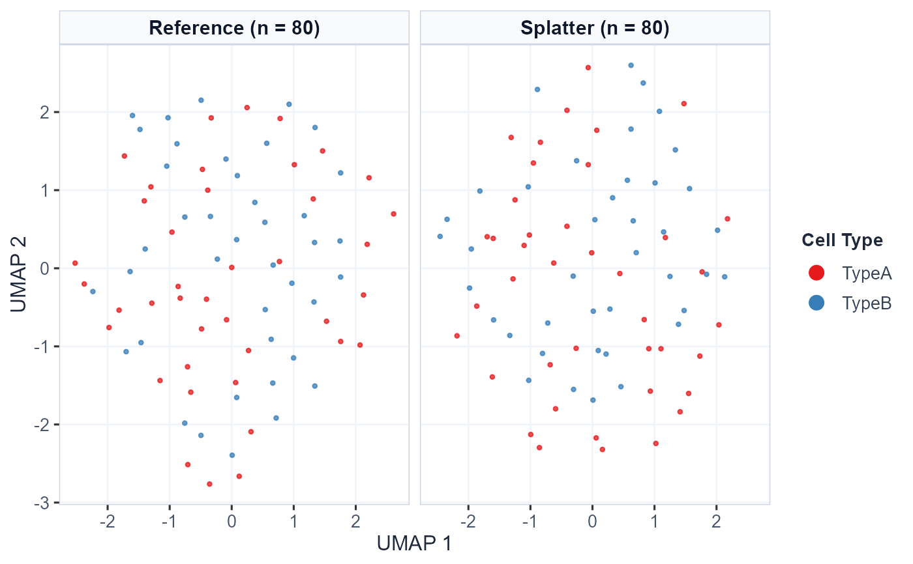

Plot High-Dimensional Dataset Embeddings for Reference and Simulated Single-Cell Data
Source:R/10_visualizations.R
plot_dataset_embeddings.RdGenerates publication-ready comparative visualizations of empirical reference and simulated single-cell datasets across UMAP, t-SNE, or PCA coordinate spaces. Supports side-by-side comparison, comprehensive multi-method facet grids, and co-embedded overlays, with customizable color mappings and themes.
Usage
plot_dataset_embeddings(
embedding_data,
reduction = c("umap", "tsne", "pca"),
layout = c("facet", "side_by_side", "overlay"),
color_by = c("cell_type", "cluster", "library_size", "dataset", "batch"),
selected_methods = NULL,
pt_size = 0.8,
alpha = 0.75,
palette = "Set1",
title = NULL,
base_size = 12
)Arguments
- embedding_data
A
data.frameproduced bycompute_dataset_embeddings.- reduction
Character string specifying reduction used:
"umap","tsne", or"pca".- layout
Character string specifying the comparison layout:
"facet"Faceted grid showing Reference alongside all selected simulated datasets simultaneously (default).
"side_by_side"Direct side-by-side comparison of Reference versus a single chosen simulator.
"overlay"Overlaid single coordinate space showing Reference and Simulated cells together.
- color_by
Feature used for coloring cells:
"cell_type"(default),"cluster","library_size","dataset", or"batch".- selected_methods
Optional character vector of simulator names to display. If
NULL, displays all available simulators.- pt_size
Numeric point size (default: 0.8).
- alpha
Numeric transparency in [0, 1] (default: 0.75).
- palette
Character string specifying discrete color palette from RColorBrewer (default:
"Set1").- title
Optional title character string. If
NULL, an informative default title is generated.- base_size
Base font size for ggplot2 rendering (default: 12).
Examples
data(example_scrna, package = "scSimEval")
emb <- compute_dataset_embeddings(
reference = example_scrna$ref,
simulated = list("Splatter" = example_scrna$sim),
reduction = "umap",
cell_types = example_scrna$cell_types
)
#> Warning: You're computing too large a percentage of total singular values, use a standard svd instead.
#> Warning: You're computing too large a percentage of total singular values, use a standard svd instead.
plot_dataset_embeddings(emb, reduction = "umap", layout = "facet")
